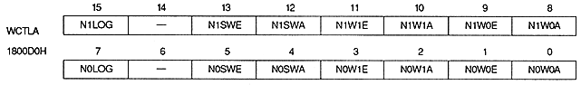
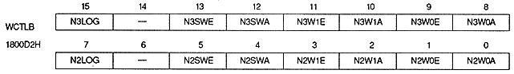
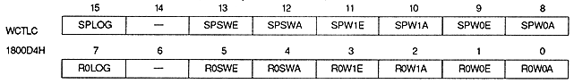
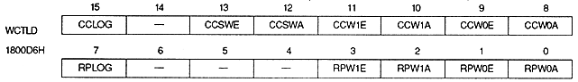

TV screen (interlace) mode | WxxY8 | WxxY7 | WxxY6 | WxxY5 | WxxY4 | WxxY3 | WxxY2 | WxxY1 | WxxY0 |
Normal, High-Res (Non-In | V8 | V7 | V6 | V5 | V4 | V3 | V2 | V1 | V0 |
Normal, Hi-Res (Double Dense | V7 | V6 | V5 | V4 | V3 | V2 | V1 | V0 | Disable |
Dedicated Monitor | V8 | V7 | V6 | V5 | V4 | V3 | V2 | V1 | V0 |




Window Logic Bit : Logic bit (N0LOG, N1LOG, N2LOG, N3LOG, R0LOG, SPLOG, RPLOG, CCLOG)